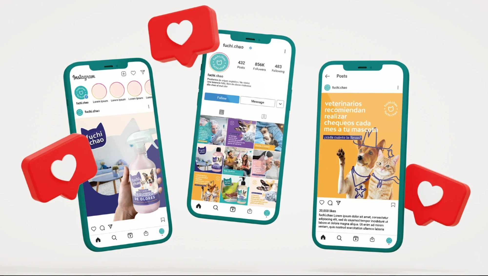

Identidad Visual
Tu negocio ya sabe quién es y necesita verse a la altura.- Es para ti si
- estás por abrir, tienes un producto que llega a góndola o tu imagen actual quedó atrás.
- No es para ti si
- solo buscas un logo rápido y barato.
Incluye: conversación inicial, naming si hace falta, logotipo, paleta, tipografía, aplicaciones (etiquetas, packaging, papelería, redes) y manual de uso.
CasosBowraps · Fuchi Chao (2021)
Quiero mi identidad visual (WhatsApp, se abre en una pestaña nueva)